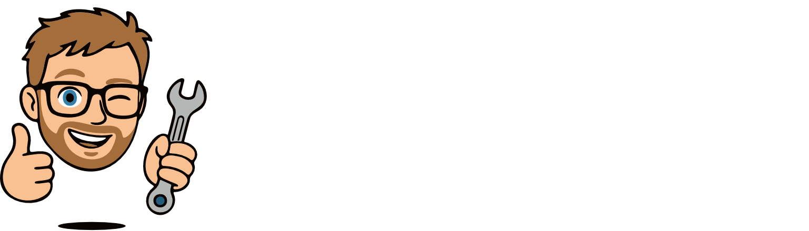
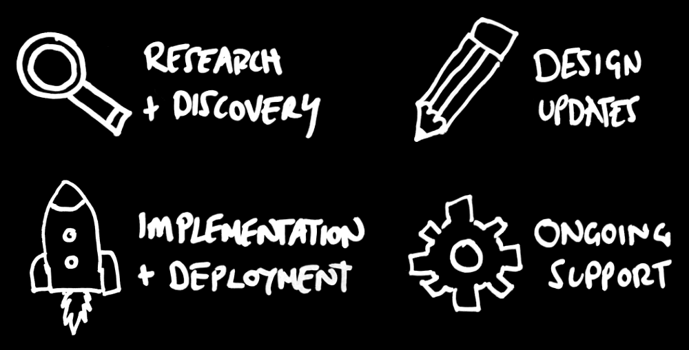
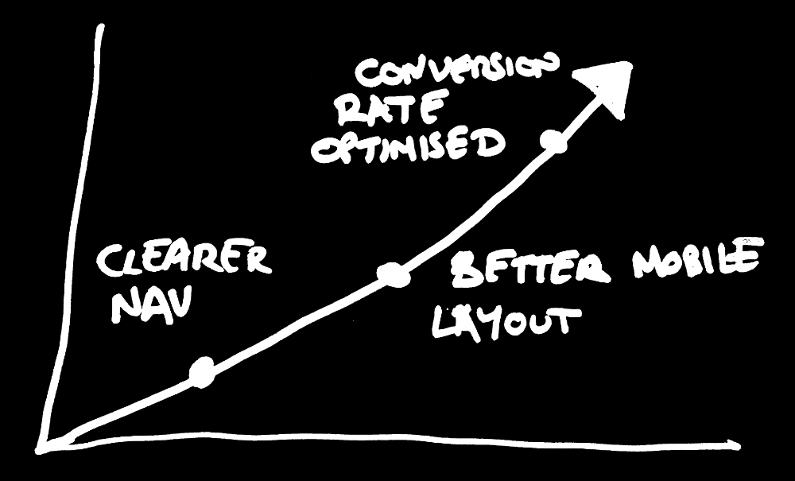
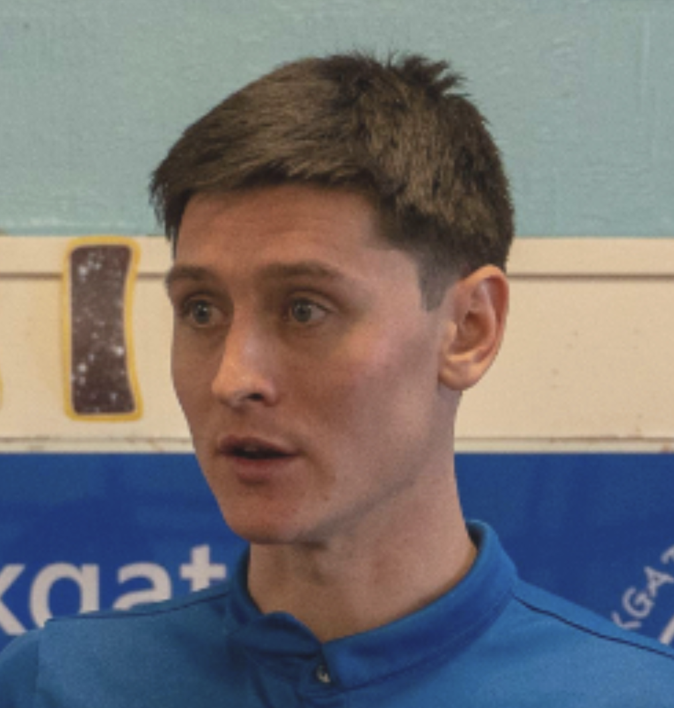

I'm Sean Harrod, a multi-disciplinary designer based in the UK. I've spent the last decade designing and building ecommerce websites and digital products for independent businesses and household name brands. I'm now available for freelance work - meaning you get experienced, hands-on support directly from me, at a fraction of agency cost.
"Sean built our website from scratch and handled all of our branding. He made the whole process really straightforward and took the time to understand exactly what we were after. The result was something we're genuinely proud of - professional, clean and right for our business. I wouldn't hesitate to recommend him to anyone."
Alex, Owner - Ask Automotive


Flexible support that works around you
Whether you need ongoing updates and improvements, help getting a site live, conversion optimisation, UX improvements, or just someone reliable to call when something needs fixing - I can help. I offer one-off projects and monthly retainer arrangements to suit your needs.
Your website should get better over time
Good web design isn't a one-time job. Small, regular improvements to how your site looks, feels and performs add up to a real difference in sales and enquiries. Whether it's refining how customers navigate your store, improving how products are presented, or testing what drives more people to buy - these incremental changes compound over time. Having a designer on hand means you're always moving forward, not standing still.

"I've worked with Sean for years and he's been invaluable to the Kids Can brand. He took over a rebrand that had stalled halfway through, pulled everything together, and delivered something that finally felt right. He then built the website from scratch to match. Sean just gets it - he's reliable, easy to work with, and genuinely cares about the end result. I couldn't recommend him highly enough."
Mike, Owner - Kids Can
